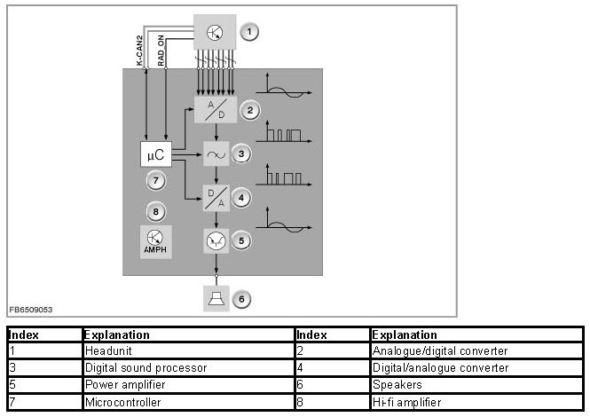

Hi-Fi Amplifier
Hi-Fi Amplifier
Hi-fi amplifier
A new hi-fi amplifier has been in use since September 2009. The new hi-fi amplifier offers the following new features:
- Digital Sound Processing
- Vehicle-specific sound control
Brief component description
Internal structure of the hi-fi amplifier
The new hi-fi amplifier is more powerful than its predecessor. The hi-fi amplifier contains additional components that improve sound quality. The signal path and the control of components in the hi-fi amplifier are depicted in the following image.

Analogue/digital converter
The audio signals between headunit and amplifier are transmitted directly via 8 lines. These lines connect the speaker outputs of the headunit with the signal inputs of the amplifier. The analogue signals are digitized by the analogue/digital converter. This enables further processing without quality losses.
Digital sound processor
The digital audio signal is then processed by the DSP and converted. The volume of the different frequencies in the audio signal is individually adjusted to suit the particular vehicle. This generates an optimal sound pattern.
Digital/analogue converter
The digital signal adjusted by the DSP is converted back to an analogue signal by the D/A converter.
Power amplifiers and speakers
The analogue signal from the D/A converter is amplified in the output stage and output on the speakers.
Microcontroller
The microcontroller contains the central control unit. The microcontroller is responsible for the diagnostic functions and control of the remaining components. The microcontroller is connected to the headunit via the CAN bus. The hi-fi amplifier is switched on and off via the RAD_ON-Leitung.
Note for Service department:
The hi-fi amplifier can be coded and programmed. After the hi-fi amplifier is replaced, the new amplifier must be programmed and coded. From September 2010 a bus connection will no longer be installed for the hi-fi amplifier.
Also replacement parts for the hi-fi amplifier that were bus-compatible until then will no longer be bus-compatible. The voltage supply can only be checked manually.